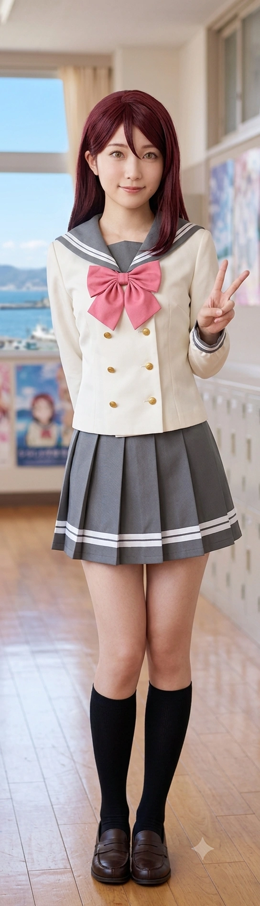
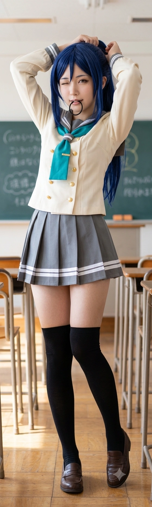
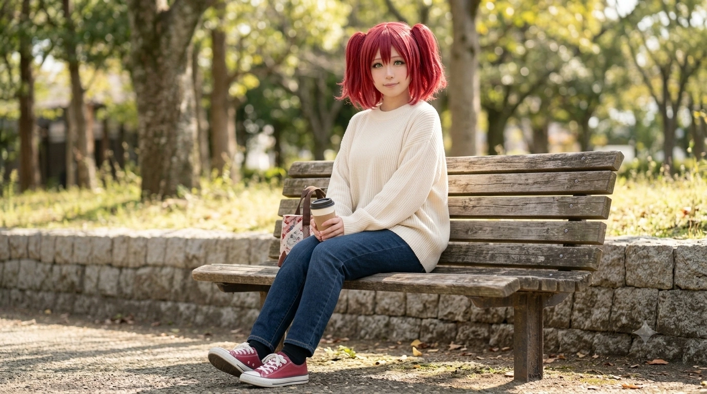

- 1. 개요
- 2. 핵심 멤버 소개 (Core 5 - 2003년생 찐친 라인)
- 3. 유스 멤버 및 동맹 연합 (Youth 4)
- 4. 전설의 서막: 2023 임은혜 구출 작전과 핏빛 복수극
- 5. 대외 전투 및 활약상
- 5.1. 정철규 후보 멸망전 (고해영의 텐션 리드)
- 5.2. 베르데 홀 "메카쿠시테!" 완벽 방어전
- 6. 타 세력과의 기묘한 교두보 연대 (세계관 대통합)
- 7. 대환장 인물 케미 및 여담 모음
- 7.1. 고해영과 오하리의 자본주의 굴욕(?)
- 7.2. 진선자와 이리자의 병동 내 은밀한 공생
- 7.3. 마루루비의 종족을 초월한 힐링 교감
- 7.4. 송과영의 말 잘 듣는 남동생 기만질 사태
- 7.5. 도선요와 임은혜의 키·체급 역전의 굴욕
1. 개요
효빈광역시 탄성군, 특히 당가동과 고해읍 일대를 쥐락펴락하는 무시무시한 서브컬처 카르텔. 일본의 스쿨 아이돌 프로젝트 《러브 라이브! 선샤인!!》의 Aqours(아쿠아) 멤버들을 오시(최애)로 두거나 원작 캐릭터와 소름 돋게 똑같은 도플갱어급 인물들이 모인 연합체다. 불의를 보면 물리적 폭력(?)과 합법적인 팩트 폭격, 그리고 광기의 텐션으로 상대를 사회적으로 매장해버리는 자경단급 어벤져스로 통한다.
애니메이션 속 감동적이고 아련한 우정 서사 따위는 없다. 이들은 기저귀 찰 때부터 동네 흙을 파먹으며 자란 리얼 한국형 'K-소꿉친구'들로, 서로에게 팩폭과 디스를 날리는 게 일상이다. 하지만 누군가 자신들의 구역을 더럽히거나, 약자(특히 서브컬처 동지인 임은혜 등)를 괴롭히면 단 1초 만에 압도적인 피지컬(수영, 쾌감펀치, 레슬링)과 법학도 브레인을 결합하여 완벽한 참교육을 시전한다. 이들의 무지막지한 전투력은 훗날 효빈시 3대 세력(아쿠아, 무지개, 리에하스)을 하나로 묶는 거대한 서사의 중심축이 된다.
2. 핵심 멤버 소개 (Core 5 - 2003년생 찐친 라인)
그룹의 근간을 이루는 2003년생 동갑내기 5인방이다. 이들의 무력과 지력은 이미 동네 양아치 수준을 완벽하게 초월했다.
어벤져스의 텐션 리더. 탄성군 워터드롭 호텔의 막내딸로, 기적의 출생지(고해읍 천가리)를 지녔다. 끝없는 체력과 텐션으로 일진들을 상대로 쉴 새 없이 잔소리를 쏟아부어 기를 빨아먹는 '텐션 고문'의 달인이다. 정철규 타도 시위를 최전선에서 이끌었으며, 토치만 호텔 공식 마스코트로 활동하는 성공한 덕후. 귤을 광적으로 좋아하며 커피를 극혐한다.


수영 베테랑 & 재봉틀 마술사. 출생지마저 도변읍 요우리인 뼛속까지 요우. 수영 대회 1등 출신으로 다져진 우람한 이두박근으로 진상들을 철벽 방어한다. 밥 요리의 달인이자, 친구들의 코스프레 제복을 한 땀 한 땀 찍어내는 퀄리티 장인이다. 어벤져스 중 유일하게 정상적인 상남자 남친(츠키 실사판)을 보유하고 있다.

어벤져스의 실질적 무력 1위. 이자동 과남역 근처에서 태어난 기적. 다이빙과 수영으로 빚어진 압도적인 광배근과 괴력으로 일진들을 허공에 들어 저먼 수플렉스로 꽂아버리는 인간 흉기다. "허그하자!"라며 달려들면 갈비뼈가 부러질 각오를 해야 한다. 요리에 손을 대면 냄비를 미역 괴물로 연성하는 치명적인 독요리술사다.
두뇌파 군기반장이자 법적 처형인. 어벤져스 유일의 최고학력자. 친구들이 물리력으로 상대를 눕혀놓으면, 차가운 눈빛과 점을 씰룩거리며 "뿟뿌 데스와!"를 외치며 고소장을 대필해 주는 무자비한 팩트 폭격기다. 여동생 석루비를 끔찍이 아끼는 중증 시스콘이자, 무지개 동호회의 기강을 잡는 호랑이 선배다.
3. 유스 멤버 및 동맹 연합 (Youth 4)
어벤져스의 직속 후배 격이거나, 이들과 완벽하게 동기화된 04~07년생 연합 멤버들이다.

석다연의 친동생. 겉으론 "삐기잇!" 하며 떨지만, 일진을 관절기로 눕히고 "어디서 음식물 쓰레기 냄새가 나네"라며 팩폭을 꽂는 '매운맛 팩폭러'다. 무지개 동호회의 실세들과 어울리며 이중생활을 하고, 임은혜의 전담 방송 의상 제작자로 활약하며 효빈시 3대 세력을 잇는 완벽한 교두보 역할을 한다.

기가 센 주변인들(오하리 등) 사이에서 영혼이 털리는 소동물 포지션. 언니들 틈에서 기가 빨린 루비가 벤치에서 울고 있을 때 무념무상 표정으로 단팥빵을 물려준 구원자. 효빈시 유명 빵집 투어를 함께 다니며 종족을 초월한 '마루루비' 힐링 케미의 중심이다.
중증 중2병 타천사. 주말마다 기랑공원에서 흑마법 의식을 치르다 무릎이 깨져 이리자가 근무하는 안천병원 응급실에 실려 가 '물리치료(등짝 펀치)'를 받는 쫄보 환자. 그녀가 쏟아내는 중2병 대사들은 간호사 이리자에게 아주 훌륭한 '동인지 신작 소재'로 쓰이는 은밀한 공생 관계를 맺고 있다.

하프 독일인 글로벌 호텔 체인 CEO 지망생 금수저. 일진들이 친구를 욕하자 190cm 거구의 뺨을 돌려버린 전설의 '샤이니 싸다구' 창시자다. 고해영과 자본주의 주종 관계(?)로 엮여 있으며, 송과영을 사설 경호원 겸 트레이너로 고용하여 3학년조 특유의 스킨십을 '근육과 자본의 콜라보'로 즐긴다.
4. 전설의 서막: 2023 임은혜 구출 작전과 핏빛 복수극
아쿠아 어벤져스가 단순한 친목 단체를 넘어 '당가동 자경단'으로 군림하게 된 결정적인 데뷔전이자, 임은혜(06년생)를 완벽한 광신도로 만든 레전드 사건이다.
4.1. "이 고릴라년아!" 발언의 최후 (물리치료)
2023년 초, 혐덕 무리와 손절한 임은혜가 으슥한 골목에서 쓰레기 일진들에게 둘러싸여 강제 성추행 및 협박을 당하고 있었다. 안공주, 유리내, 백모모의 다급한 S.O.S를 받고 도선요, 이리자, 송과영 등 피지컬 어벤져스가 즉각 현장에 난입했다.
일진들은 상황 파악을 못하고 송과영의 몸매를 훑으며 "야, 니 몸도 좋던데, 나랑 한 번 하면 저 임은혜 년 놔줌 ㅋ"라며 역겹게 찝적댔다. 하지만 겉옷이 벗겨지며 드러난 과영의 무시무시한 광배근과 전완근을 보고 일진이 "아씨발 뭐야 이 괴력 고릴라년은?! 꼴리다 말았네 꺼져!"라며 망언을 내뱉는 순간, 과영의 이성 끈이 끊어졌다.
"내 턱주가리도 고릴라처럼 빻아줄게." 과영은 진정한 괴력 모드를 발동해 일진의 허리춤을 잡고 공중 부양을 시켜 아스팔트에 저먼 수플렉스 급으로 꽂아버렸고, 이리자는 쾌감펀치로 턱을 돌렸으며, 도선요의 남자친구마저 분노해 안면을 타격했다. 골목길은 일진들의 곡소리로 초토화되었다.
[석루비의 팩폭 지원 사격]: 이때 우연히 지나가던 막내 석루비가 이 광경을 보았다. 일진들이 앳된 루비를 보고 "쫄았으면 꺼져"라고 조롱하자, 루비는 쓰레기 보듯 경멸하는 눈빛으로 "어디서 음식물 쓰레기 썩는 냄새가 나나 했더니... 역겨우니까 그 더러운 입 당장 닥쳐. 산소도 아까운 벌레 새끼들아."라며 팩폭을 날렸고, 손을 올리려는 일진을 단숨에 관절기로 바닥에 꽂아버리며 화룡점정을 찍었다.
바닥에 처박힌 일진이 정신을 못 차리고 "야 임은혜 이 ㅆㅂ년아! 넌 어차피 나한테 먹히게 되어있어 ㅆㅂ!"이라며 폭언을 쏟아내자, 항상 차분하게 고전문학을 읊던 단정한 백모모의 이성의 끈이 완벽하게 끊어지고 말았다. 모모는 바닥에 깔린 일진에게 다가가 역사상 처음으로 어마어마한 사자후를 갈겼다.
4.2. 석다연의 법적 사형선고와 고해영의 텐션 고문
물리적 청소가 끝난 뒤, 경찰서에서 2차 참교육이 시작되었다. 과제 때문에 현장에 없었던 로스쿨생 석다연이 등판해 차가운 눈빛으로 "미성년자 협박, 명예훼손, 성폭력특례법 위반 미수. 촉법소년도 아니군요? 뿟뿌 데스와. 최고 형량과 최대 손해배상액으로 모시겠습니다."라며 엑셀로 고소장 초안을 완벽하게 작성해 주어 은혜 측의 법적 승리를 확정 지었다.
한편, 뒤늦게 소식을 듣고 "내가 나설 차례다 캉캉!!"이라며 분노한 고해영은 일진 잔당들이 도망친 피시방을 귀신같이 찾아냈다. 해영은 그들 옆에 앉아 특유의 광기 어린 하이텐션으로 "니들이 그러고도 인간이야?! 캉캉 미카아아앙!!"이라며 쉴 새 없이 귀에다 대고 소리를 지르는 '텐션 고문'을 시전해, 일진들이 "제발 살려주세요... 기 빨려서 죽을 것 같아요"라며 백기 투항하게 만들었다.
4.3. 리에라몰 VIP의 자본주의 축복과 전 남친 참교육
딸을 지켜준 어벤져스를 리에라몰 VIP실로 초대한 임은혜의 아빠(임세혁 점장)는 극대노하여 대형 로펌을 선임, 일진들의 집안을 파산 직전까지 몰고 가는 '금융 피의 숙청'을 시전했다. 어벤져스에게는 눈물을 흘리며 리에라몰 100만 원 상품권, 평생 30% VIP 할인권, 초호화 한정판 굿즈 세트를 하사했다. 이후 어벤져스는 리에라몰의 명예 귀족으로 등극했다.
[전 남친 사회적 매장 사건]: 구출 당시 송과영의 옷이 흐트러져 맨살이 보인 것을 두고 "너 딴 놈들한테 맨살 보여주고 다니냐? 바람피우냐!"며 적반하장으로 지랄하고 억지로 스킨십을 시도하던 과영의 찌질한 전 남자친구가 있었다. 과영은 그 자리에서 팔을 꺾고 이별을 통보했다. 이 소식을 들은 은혜, 안공주, 백모모 일당은 분노하여 아빠(점장) 빽과 교내 네트워크를 총동원해 그 전 남친의 알바 자리를 모조리 폭파시키고 리에라몰 출입 금지를 먹이는 등 사회적으로 완벽하게 매장시켜버리는 은혜를 갚았다.
5. 대외 전투 및 활약상
5.1. 정철규 후보 멸망전 (고해영의 텐션 리드)
22대 총선 당시, 국민의힘 정철규 후보가 고해역을 "만화나 보러 오는 시골 촌구석, 애니 센터 부수고 공장 지어야 한다"고 망언을 쏟아냈다. 고해역의 본체(?)인 고해영이 바보털을 빳빳하게 세우고 극대노하여 '정철규 타도 청년 연대'를 결성해 시위를 주도했다. 해영의 폭발적인 텐션으로 상인회 어르신들까지 설득해 대규모 궐기를 이끌어냈고, 뒤이어 석다연이 "후보자 비방죄 요건도 모르는 무식한 협박 마시지요. 뿟뿌 데스와!"라며 선거법을 랩처럼 읊어 상대 진영의 입을 틀어막았다. 결국 정철규는 3위(9.33%)로 폭망했다.
5.2. 베르데 홀 "메카쿠시테!" 완벽 방어전
윤재훈 일당이 효빈대 베르데 홀에서 쇠파이프 난동을 피우며 '치카리코' 대형 등신대 패널을 부수려 할 때, 천 비서관이 맨팔로 쇠파이프를 막아내는 사이 고해영이 앞장서서 어벤져스 및 무지개 동호회 멤버들과 스크럼을 짰다. 그리고 눈물을 머금고 "메카쿠시테(눈 가려)!!"를 처절하게 떼창했다. 이 덕분에 성우들(이나미 안쥬, 아이다 리카코 등)이 꼴불견을 보지 않게 보호받았고, 훗날 라디오에서 성우들이 직접 감사를 표해 멤버 전원이 "죽어도 여한이 없다"며 성불(?)하는 기적을 맞이했다.
6. 타 세력과의 기묘한 교두보 연대 (세계관 대통합)
어벤져스는 독고다이가 아니다. 이들은 석루비와 임은혜라는 강력한 매개체를 통해 효빈시 3대 세력(아쿠아, 무지개, 리에하스)을 완벽하게 하나로 묶는 거대한 카르텔을 형성하고 있다.
6.1. 무지개 동호회와의 연결고리 (석루비의 이중생활)
어벤져스의 군기반장 석다연의 동생 석루비는 효빈대 최강의 사조직 '무지개 동호회'의 실세 김시연 등과 동갑내기 절친으로 활동 중이다. 모범생 루비가 대학에 가서 무지개 동호회의 탄수화물 폭식 사육과 물리적 응징 현장에 휩쓸리는 이중생활을 한다는 소식에, 언니 석다연은 결국 옥상으로 멤버들을 소집했다.
"우리 루비에게 이상한 물들이지 마세요. 뿟뿌 데스와!" 다연이 기강을 잡는 찰나, 눈치 없이 난입한 고해영이 다연의 암바에 걸려 바닥을 기는 사태가 벌어졌다. 이 압도적인 무력을 직관한 무지개 동호회 멤버들은 공포에 질려 석다연을 캠퍼스 내 '절대 존엄 호랑이 선배'로 깍듯이 모시게 되었다. 이로써 무지개 동호회와 아쿠아 어벤져스 간의 기묘한 먹이사슬과 완벽한 연대가 성립되었고, 졸지에 호랑이 선배의 동생인 루비를 모시고 다녀야 하는 김시연은 중간관리자의 비애를 겪게 되었다.
6.2. 리에하스 연합과의 충성 관계 (임은혜 의상 협업)
구출 사건의 최대 수혜자 임은혜는 어벤져스를 구세주로 떠받들며 리에라몰 최고급 디저트를 무한 조공으로 바치고 있다. 이 과정에서 은혜는 의류산업학도인 석루비의 천재적인 재봉 능력을 알게 되었고, 루비를 자신의 인터넷 방송(은혜당)용 고퀄리티 코스프레 의상 전담 제작자(비즈니스 파트너)로 은밀하게 영입했다.
은혜가 방송에서 입을 신상 제복을 루비가 밤새워 뽑아내면, 은혜는 마라탕 4단계와 비싼 아이스크림 무한 스폰서로 보답한다. 이로써 은혜(리에하스 연합)와 루비(아쿠아-무지개)는 자본주의와 구원 서사로 얽힌 완벽한 3대 세력의 교두보를 형성하게 되었다. 덧붙여 은혜는 김시연의 '사이버 국정원장' 급 정보력과 결탁해 쓰레기들을 합동으로 사회 매장시키는 '사이버-자본 동맹'까지 맺고 있다.
7. 대환장 인물 케미 및 여담 모음
7.1. 고해영과 오하리의 자본주의 굴욕(?)
금수저 글로벌 호텔 후계자인 오하리(07년생) 앞에서, 토치만 호텔 공식 마스코트로 로열티를 받는 고해영(03년생)이 호텔 최고급 뷔페 식사권에 눈이 멀어 알량한 선배의 자존심을 해천대 앞바다에 버리고 "오하리 사마!!"를 외치는 굴욕적인 주종 관계(?)가 벌어진다. 여기에 송과영은 오하리의 사설 경호원 겸 헬스 트레이너 알바를 뛰면서 원작 3학년조의 바이브를 '근육과 자본의 콜라보'로 훌륭하게 보여주고 있다. 단, 오하리가 텐션을 주체 못 하고 "샤이니!!"라며 안기려 할 때, 석루비가 "삐기이이이잇!!" 초고음파를 발사해 오하리의 고막을 마비시키고 텐션을 강제 진압시킨 사건은 전설이다.
7.2. 진선자와 이리자의 병동 내 은밀한 공생 (요하리리 물리치료)
중2병 타천사 진선자가 주말마다 기랑공원에서 돌비석을 붙들고 흑마법 의식을 치르다 무릎을 깨먹으면 실려 가는 곳이 안천병원 응급실이다. 그곳에는 간호사 이리자가 근무하고 있다. 진선자가 "크큭... 필멸자여, 타천사의 날개를 건드리지 마라..."라고 중2병 대사를 치면 이리자는 쾌감펀치로 등짝을 후려쳐 1초 만에 물리치료를 완료한다. 압권은 부녀자 속성인 이리자가 진선자의 타천사 대사들을 '동인지 신작 소재'로 쏠쏠하게 써먹는다는 점이다. 겉으로는 무서운 간호사 언니지만 뒤에서는 '리틀 데몬 릴리'로 불리며 영감을 주고받는 기묘한 공생 관계다.
7.3. 마루루비의 종족을 초월한 힐링 교감
기가 센 주변인들(석다연 팩폭, 무지개 동호회 기행)에게 영혼까지 털려 안천구 길거리에서 훌쩍이는 04년생 석루비에게, 지나가던 07년생 하마루가 무념무상 표정으로 단팥 크림빵을 입에 물려주며 마루루비 힐링 케미가 탄생했다. 학교와 나이가 달라도, 효빈시 내 유명 빵집 투어 동선이 겹치면서 서로가 서로의 안식처가 되어준다. 둘이 벤치에 마주 앉아 "세상 참 살기 힘들지...", "지치네유..."라며 동병상련의 한숨을 내쉬는 광경은 동구대와 효빈대 학생들 사이에서 유명한 볼거리다.
7.4. 송과영의 말 잘 듣는 남동생 기만질 사태
친구들이 모인 카페에서 대화의 주제가 '말 안 듣는 웬수 같은 남동생들'로 넘어갈 때마다 송과영은 큰 죄악(?)을 저지른다. 이리자와 도선요가 자신들의 06년생 동생들이 얼마나 징그럽게 말을 안 듣고 속을 썩이는지 핏대를 세우며 성토할 때, 과영이 조용히 커피를 마시며 끼어든다.
이 말을 듣는 순간, 현실 동생 스트레스에 시달리는 이리자와 도선요는 이마에 굵은 핏대가 서며 "야 이 기만자 년아!! 그거 은근슬쩍 자랑하는 거잖아!!"라며 테이블을 엎을 기세로 극대노한다. 본의 아니게 인성질(?)을 시전하여 친구들의 분노를 유발하는 것이 그녀의 소소한 일상이다. (물론 과영의 흉악한 완력이 무서워서 동생이 감히 기어오르지 못한다는 것이 학계의 정설이다.)
7.5. 도선요와 임은혜의 키·체급 역전의 굴욕
2023년 구출 작전 당시만 해도 분명 선요가 은혜보다 키가 훨씬 컸다. 하지만 그사이 폭풍 성장을 한 06년생 임은혜가 어느새 선요의 키는 물론이고, 선요가 내심 자부심을 가졌던 '흉부 사이즈'마저 압도적으로 추월해 버렸다. (은혜의 비현실적인 89.9 스펙의 위엄). 만날 때마다 선요는 은혜를 위아래로 훑어보며 "너 대체 뭘 챙겨 먹고 위아래로 그렇게 폭풍 성장을 했냐?!"라며 억울해하는 것이 일상이 되었다. 은혜가 "선요 언니 큥~" 하며 와락 안겨올 때마다 압도적인 체급(?) 차이에 밀려 숨막혀 한다는 짠한 후문이 있다.